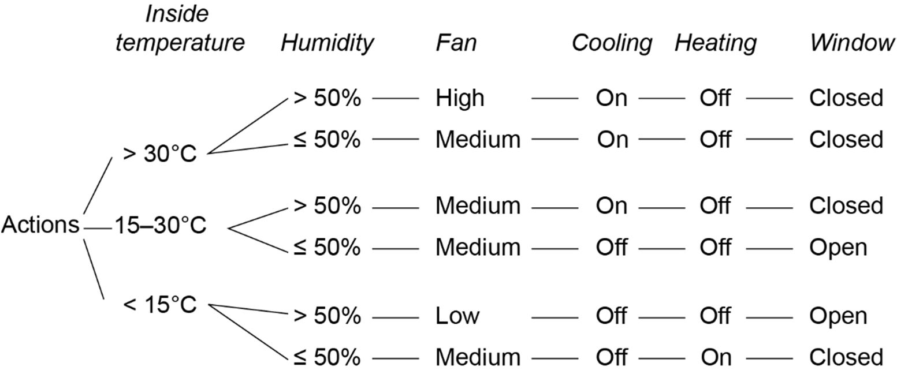
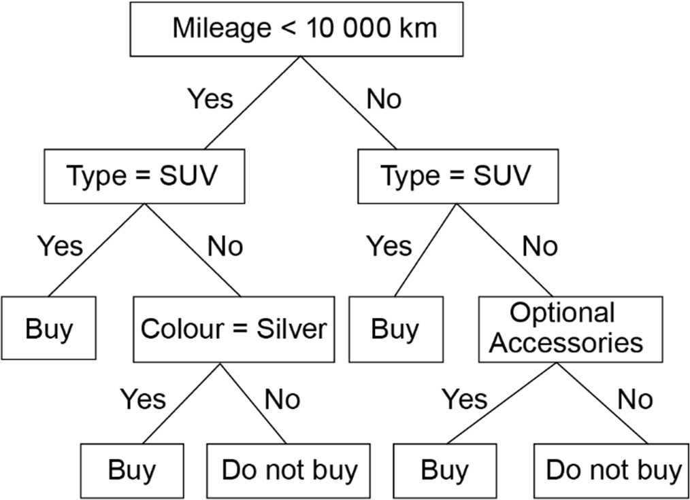
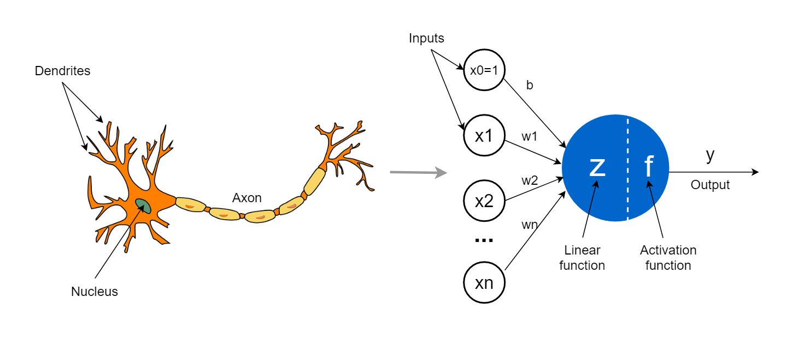
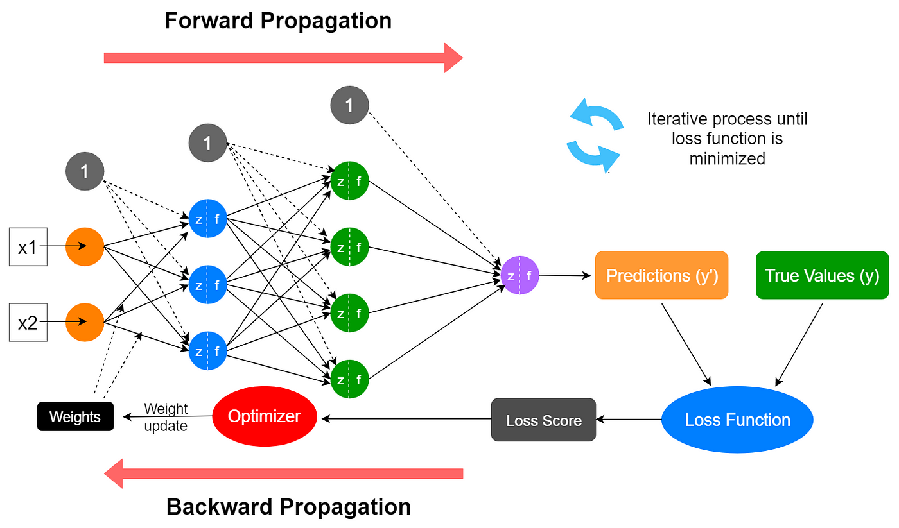
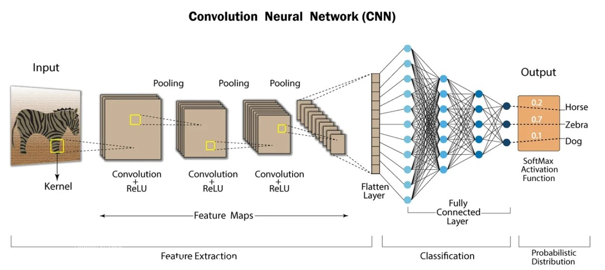
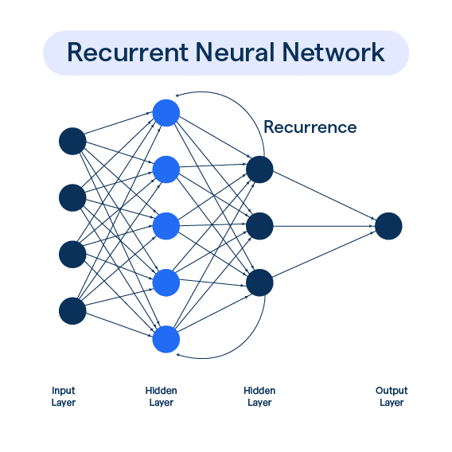
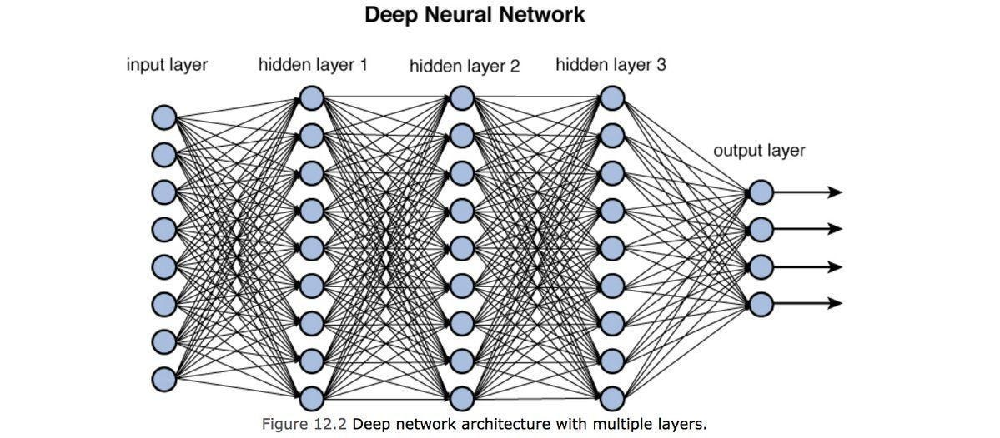
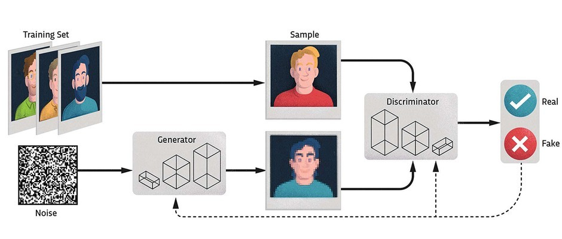
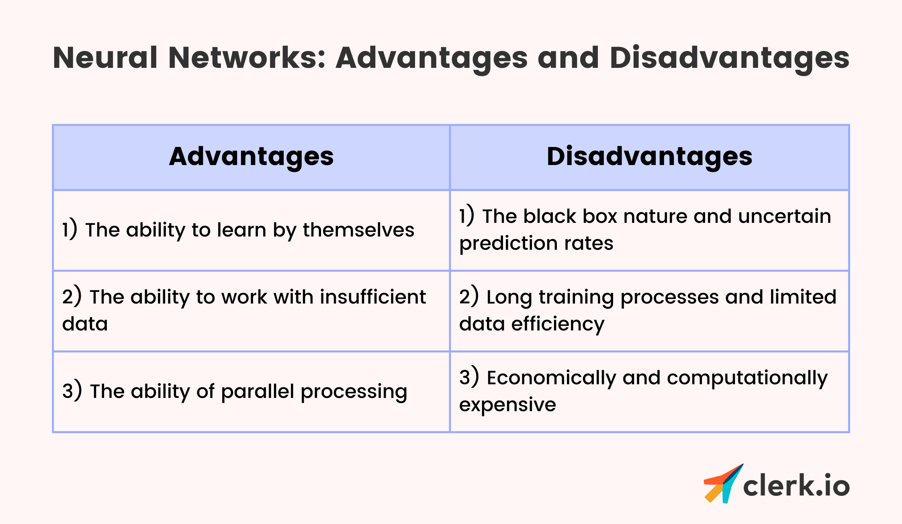

Syllabus
Research models used by software engineers to design and analyse ML including:
- decision trees
- neural networks
Learning Intention and Success Criteria
Learning Intention - Students will:
- Understand and describe the models used by software engineers to design and analyse machine learning systems, focusing on decision trees and neural networks.
Success Criteria - Students can:
- Define and explain decision trees, including their structure, strengths, and limitations.
- Describe neural networks, outlining their architecture, types, and applications.
- Compare and contrast the benefits and drawbacks of decision trees and neural networks.
Content
Machine learning (ML) models are integral to the development of intelligent systems, and software engineers rely on various models to design and analyse them. Two of the most commonly used models are decision trees and neural networks, each serving different purposes in the ML lifecycle. These models help software engineers understand data patterns, make predictions, and improve system performance.
Decision Trees
A decision tree is a visual diagram that represents all possible combinations of decisions and their resulting actions. It is commonly used in both classification and regression tasks in machine learning (ML). The structure of the tree follows a sequence of decisions, where each decision path leads to either another decision or a final action (or outcome).
The decision tree builds paths based on the conditions at each decision point. For example, if the current condition satisfies a decision criterion, the branch will move in one direction (e.g., "Yes"). If not, it will move in another (e.g., "No"). Each path eventually leads to either another decision or an end result, making it clear how a combination of conditions leads to specific outcomes.
The following decision tree shows the rules in controlling the temperature system within a ‘smart’ house.

The following diagram shows another way to represent a decision tree.

Key Strengths
-
Interpretability: The flowchart-like structure makes decision trees easy to understand and interpret, showing how decisions lead to specific actions.
-
Versatility: Decision trees are useful for a wide range of problems, particularly when the goal is to map out possible outcomes based on a set of conditions.
Limitations
-
Overfitting: Decision trees can grow too complex when trained on noisy data, leading to overfitting.
-
Instability: Small changes in the data can lead to a very different tree structure.
Common Use Cases
-
Classification: E.g., determining whether an email is spam or not.
-
Regression: E.g., predicting the price of a house based on its features like size and location.
Neural Networks
Neural networks (NNs) are a foundational model in machine learning, particularly when dealing with large and complex datasets. They are inspired by the biological neural networks in the human brain and are capable of learning patterns, making predictions, and transforming raw data into actionable insights.

Neural networks are at the core of deep learning, a subset of machine learning that has advanced fields such as computer vision, natural language processing (NLP), and reinforcement learning. The power of neural networks lies in their ability to capture highly non-linear relationships, making them suitable for both structured (e.g., tabular) and unstructured (e.g., images, text) data.
Structure
A neural network is composed of three main types of layers:
- Input Layer
- This layer takes in the raw data as input. Each node in the input layer represents one feature of the data (e.g., pixel values in an image, numerical features in tabular data, or words in a text).
- Hidden Layers
- These are the layers between the input and output layers. A neural network can have multiple hidden layers, and each layer consists of neurons (nodes) that perform mathematical transformations on the input data. The more hidden layers, the "deeper" the network.
- Activation Functions: Each neuron applies an activation function to introduce non-linearity into the model, allowing it to learn complex patterns. Common activation functions include:
- ReLU (Rectified Linear Unit): Sets negative values to zero and leaves positive values unchanged, making it highly efficient for deep learning models.
- Sigmoid: Maps values between 0 and 1, often used in binary classification tasks.
- Tanh (Hyperbolic Tangent): Maps values between -1 and 1, allowing negative values to have a stronger influence on the output than Sigmoid.
- Output Layer
- The output layer produces the final prediction based on the learned weights and transformations. For example:
- In classification tasks, the output might be a probability distribution over different classes (e.g., "cat" or "dog" in image classification).
- In regression tasks, the output is typically a continuous value (e.g., predicting a house price).
- The output layer produces the final prediction based on the learned weights and transformations. For example:

Learning Mechanism
The learning process in neural networks involves the following steps:
-
Forward Propagation: Data moves from the input layer, through the hidden layers, to the output layer. Each neuron applies a weighted sum of its inputs, passes the result through an activation function, and forwards the output to the next layer.
-
Loss Function: The loss function calculates the error between the predicted output and the actual target. For instance:
- Mean Squared Error (MSE) is commonly used in regression tasks.
- Cross-Entropy Loss is used for classification tasks, measuring how far the predicted probability distribution is from the actual distribution.
-
Backpropagation: Once the loss is calculated, the model adjusts the weights of the connections using an optimisation algorithm, typically gradient descent. Gradient descent updates the weights in the direction that minimises the error, with the learning rate controlling the size of the steps taken during each update.
-
Training and Convergence: The process of forward propagation, loss computation, and backpropagation is repeated iteratively over many epochs (iterations of the training dataset). The network learns to minimise the loss, improving its performance.
Types of Neural Networks
Different types of neural networks are optimised for specific tasks. Below are the most prominent types:
1. Feedforward Neural Networks (FNN)
-
Structure: Data moves in one direction, from input to output, without cycles or feedback loops.
-
Use Cases: Simple tasks such as regression or basic classification (e.g., predicting the outcome of a stock market price).
![Understanding Feedforward Neural Networks | LearnOpenCV [online-only image]](https://learnopencv.com/wp-content/uploads/2017/10/mlp-diagram.jpg)
2. Convolutional Neural Networks (CNN)
-
Structure: CNNs have a specialised architecture for handling grid-like data such as images. They consist of convolutional layers that apply filters (kernels) to detect local patterns such as edges, textures, or colours. After convolution, pooling layers reduce the spatial dimensions, preserving essential information while reducing computational cost.
-
Use Cases: Computer vision tasks like image classification (e.g., identifying objects in images), object detection (e.g., detecting faces in a picture), and video analysis.

3. Recurrent Neural Networks (RNN)
-
Structure: RNNs are designed for sequence data (e.g., time series, text, or speech). They have feedback connections that allow information to be passed from one time step to the next. This structure makes them powerful for capturing temporal dependencies in data.
-
Variants: Long Short-Term Memory (LSTM) networks and Gated Recurrent Units (GRU) are special types of RNNs designed to overcome the problem of vanishing gradients, allowing the network to remember long-term dependencies.
-
Use Cases: Time series forecasting, language translation, speech recognition.

4. Deep Neural Networks (DNN)
-
Structure: These are neural networks with multiple hidden layers. The depth allows the network to learn more abstract and complex features from the data. However, training these networks requires large datasets and computational power.
-
Use Cases: Deep learning applications such as recommendation systems (e.g., Netflix movie recommendations), autonomous vehicles, and advanced AI systems like OpenAI's GPT.

5. Generative Adversarial Networks (GANs)
-
Structure: GANs consist of two networks, a generator and a discriminator, that are trained together. The generator creates fake data, and the discriminator evaluates whether the data is real or fake. This adversarial process continues until the generator produces realistic outputs.
-
Use Cases: Image generation (e.g., generating realistic faces), style transfer, and deepfake creation.

Check out this fascinating challenge: Which Face Is Real? Can you tell the difference between a real human face and one generated by artificial intelligence (AI)?
The faces in this challenge are generated by a Generative Adversarial Network (GAN), where two neural networks—the generator and the discriminator—compete in a process known as adversarial training. The generator creates increasingly realistic fake faces, while the discriminator tries to distinguish them from real faces. Over time, the generator improves to the point where even humans find it difficult to tell which face is real and which is AI-generated.
Try the test and see how well you perform compared to AI!
Key Concepts
-
Weight Initialisation
- The initial values of the weights can significantly impact how fast the network converges. Poor initialisation may lead to vanishing gradients or slow training. Common strategies include Xavier initialisation or He initialisation.
-
Regularisation
- To prevent overfitting, various techniques are applied:
- Dropout: Randomly drops a subset of neurons during training, forcing the network to learn more robust features.
- L2 Regularisation (Weight Decay): Penalises large weights by adding a term to the loss function, helping to generalise better.
- To prevent overfitting, various techniques are applied:
-
Batch Normalisation
- Batch normalisation normalises the input to each layer, ensuring that the inputs are on a similar scale. This technique speeds up training and improves performance by reducing internal covariate shift.
-
Optimisation Algorithms
- Gradient Descent Variants: Standard gradient descent can be computationally expensive. Variants like Stochastic Gradient Descent (SGD), Adam (Adaptive Moment Estimation), and RMSprop adapt the learning rate during training, accelerating convergence.
Strengths & Limitations
Strengths of Neural Networks
-
Versatility: Can be applied to various tasks, from image recognition to language processing.
-
Representation Learning: Automatically learns features from raw data, reducing the need for manual feature engineering.
-
Scalability: Can handle massive datasets and is capable of scaling across distributed systems (e.g., cloud computing frameworks like TensorFlow or PyTorch).
-
State-of-the-Art Performance: Especially in tasks such as speech recognition, object detection, and game playing.
Limitations of Neural Networks
-
Data Hungry: Neural networks typically require large datasets for optimal performance. Small datasets may lead to overfitting and poor generalisation.
-
Computationally Intensive: Training deep neural networks is resource-heavy, requiring high-performance hardware such as GPUs or TPUs.
-
Black Box Nature: Despite their success, neural networks are often criticised for their lack of interpretability. It can be difficult to understand why a network makes certain decisions.
-
Overfitting: Without proper regularisation, neural networks may perform very well on training data but fail to generalise to new, unseen data.

Presentations
Practical
- Provide instructions for a practical activity or direct the students to an EdStem activity
Sources
- List sources here
PowerPoint